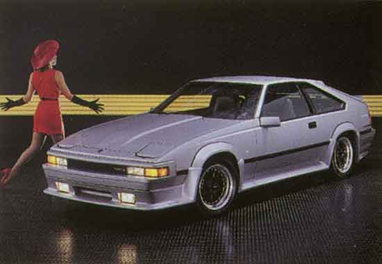

Kaminari has done it again! The newest Supra Aero package carries on the tradition of dramatic Kaminari styling that perfectly enhances the original lines of the car. Pictured here is the Kaminari Aero package for the 1984-86 Supra, which includes a front air dam, full-length side skirts, and a one-piece rear skirt. All early Supra air dams (1984-86) include auxiliary light mounting brackets for installation of factory or aftermarket driving or fog lights.